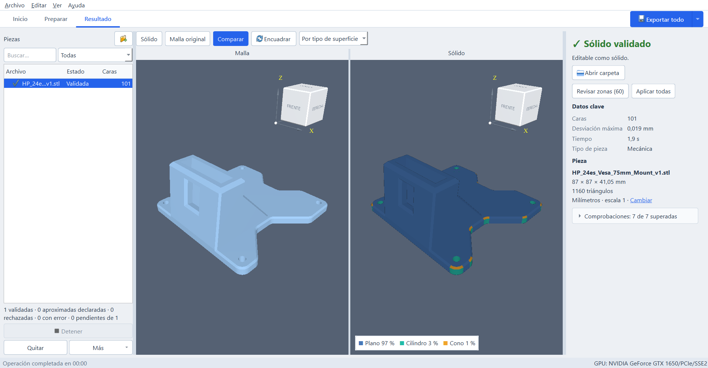
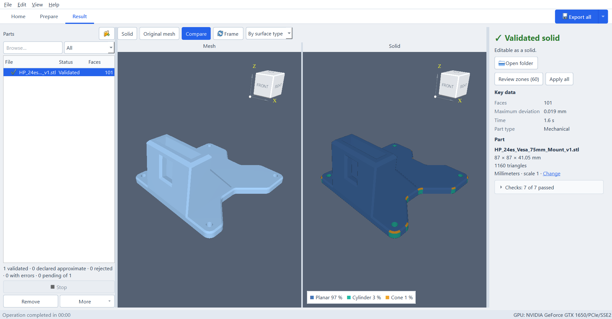
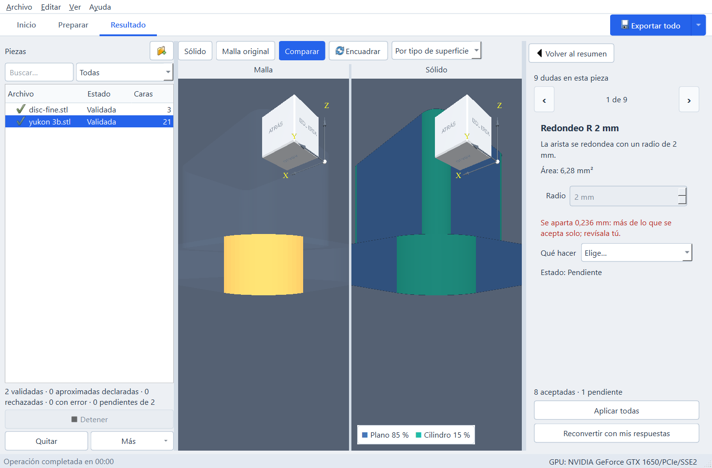
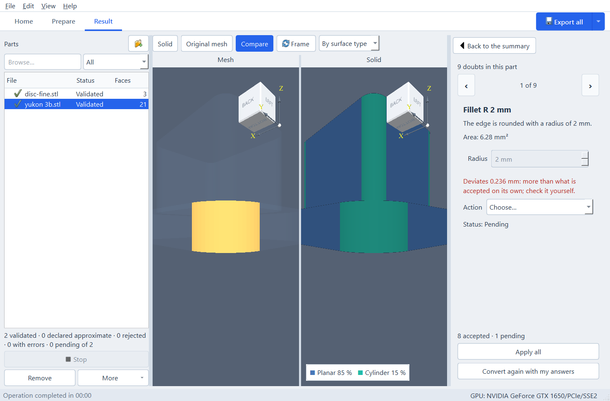
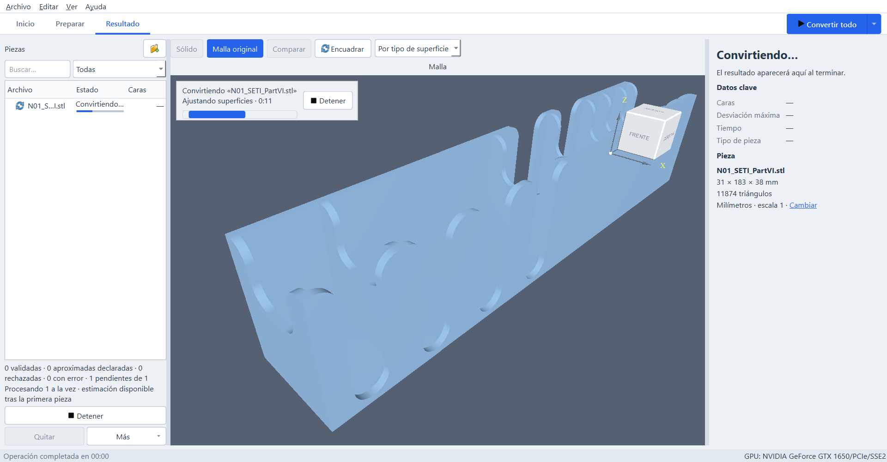
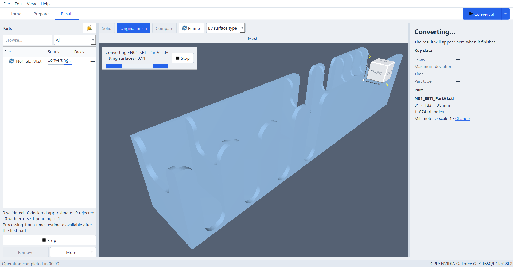

De malla a sólido editable, para volver a imprimir From mesh to editable solid, ready to print again
MeshQSolid convierte archivos STL, OBJ y 3MF en sólidos STEP con caras exactas (planos, cilindros, conos, redondeos), para que puedas cambiar una medida, añadir un taladro o adaptar un encaje en tu editor de sólidos. MeshQSolid turns STL, OBJ and 3MF files into STEP solids with exact faces (planes, cylinders, cones, fillets), so you can change a dimension, add a hole or adapt a fit in your solid modeler.
Descargar la beta para WindowsDownload the beta for Windows Ver en GitHubView on GitHubVersión 0.2.0-beta · gratuita · Windows 10/11 de 64 bits · portable, sin instalación Version 0.2.0-beta · free · 64-bit Windows 10/11 · portable, no installation


Para quién esWho it is for
Está pensado para la impresión 3D: descargas un STL de un repositorio de modelos, o tienes uno tuyo exportado de otro programa, lo pasas a sólido y lo modificas. Funciona mejor con mallas que vienen de un diseño CAD. No es una herramienta para escaneos 3D: con ellos el resultado será, como mucho, aproximado o facetado. It is meant for 3D printing: you download an STL from a model repository, or have one of your own exported from another program, turn it into a solid and modify it. It works best with meshes that come from a CAD design. It is not a tool for 3D scans: with those, the result will be approximate or faceted at best.
Piezas mecánicasMechanical parts
Soportes, carcasas, bridas, taladros y redondeos. Roscas métricas ISO y UNC cuando la malla las define bien.Brackets, housings, flanges, holes and fillets. ISO metric and UNC threads when the mesh defines them well.
Piezas planas por capasLayered flat parts
Placas, llaveros o plantillas de capas extruidas. Además del STEP, contornos en SVG a escala 1:1 para corte láser o vinilo.Plates, keychains or templates made of extruded layers. Besides the STEP, 1:1 SVG outlines for laser or vinyl cutting.
Varios cuerposSeveral bodies
3MF con varios objetos o STL con piezas sueltas: cada cuerpo se convierte por separado y se exportan juntos en un STEP.3MF with several objects, or STL with separate parts: each body is converted on its own and they are exported together in one STEP.
LotesBatches
Añade una carpeta entera; «Convertir todo» procesa solo lo que falta y «Exportar todo» guarda los STEP donde elijas.Add a whole folder; "Convert all" processes only what is missing and "Export all" saves the STEP files wherever you choose.
Siempre sabes qué has obtenidoYou always know what you got
Cada resultado lleva su nivel, sin adornos.Every result states its level, plainly.
✓ Sólido validadoValidated solid
Todas las caras son superficies exactas y pasa las comprobaciones a 0,05 mm. Editable como sólido.Every face is an exact surface and passes the checks at 0.05 mm. Editable as a solid.
≈ Sólido aproximadoApproximate solid
La mayor parte son caras limpias y el resto queda facetado; el porcentaje se indica.Most of the part is clean faces and the rest is faceted; the percentage is stated.
▦ Sólido facetadoFaceted solid
Un sólido hecho de triángulos, para formas orgánicas o mallas que no admiten otra cosa.A solid made of triangles, for organic shapes or meshes that allow nothing else.
Tú decides en las zonas dudosasYou decide on doubtful zones
Si una rosca, un redondeo o un cilindro admite más de una lectura, MeshQSolid lo pregunta. Las zonas se revisan de ficha en ficha: cada una muestra la propuesta, cuánto se aparta de la malla y qué hacer con ella.If a thread, fillet or cylinder can be read in more than one way, MeshQSolid asks. Zones are reviewed card by card: each one shows the proposal, how far it deviates from the mesh, and what to do with it.
«Aplicar todas» acepta solo lo que no se aparta más de 0,05 mm; lo demás queda para ti."Apply all" accepts only what deviates 0.05 mm or less; the rest is left to you.




Sabes en qué va mientras convierteYou see what it is doing while it converts
- La malla de la pieza en el visor, con la fase en curso y el tiempo transcurrido.The part's mesh in the viewer, with the current phase and the elapsed time.
- Un botón «Detener» siempre a mano.A "Stop" button always at hand.
- En un lote, «Pieza N de M» y una barra global.In a batch, "Part N of M" and an overall bar.
- Al terminar, malla y sólido lado a lado, con la cámara sincronizada y el color por tipo de superficie.When it finishes, mesh and solid side by side, with synchronized cameras and color by surface type.
- Español e inglés, tema claro u oscuro.Spanish and English, light or dark theme.
Línea de comandos y agentesCommand line and agents
El paquete incluye meshqsolid-cli.exe, que hace la misma conversión sin ventana. Sirve para procesar lotes desde un script o para que un agente de IA convierta piezas y lea el resultado: cada ejecución deja un resumen JSON breve y termina con un código de salida según el nivel.
The package includes meshqsolid-cli.exe, which performs the same conversion without a window. Use it to process batches from a script, or let an AI agent convert parts and read the outcome: every run leaves a short JSON summary and ends with an exit code that tells the level.
meshqsolid-cli.exe pieza.stl --step pieza.step --summary resumen.json--summary
Resumen JSON de unos 2 KB: nivel, caras y desviación.About 2 KB JSON summary: level, faces and deviation.
--report
Informe completo, con las comprobaciones y los motivos.Full report, with the checks and the reasons.
--hints
Aplica decisiones ya revisadas sobre las zonas dudosas.Applies already-reviewed decisions on doubtful zones.
Códigos de salidaExit codes
0 validadovalidated · 5 aproximado o facetadoapproximate or faceted · 3 rechazadorejected
Es una betaIt is a beta
Puede fallar. Antes de fabricar una pieza, revisa la geometría y las medidas en tu editor de sólidos. Las formas orgánicas, los redondeos encadenados y las mallas muy densas o dañadas saldrán aproximados, facetados o rechazados. Si un modelo no se convierte bien, lo que más ayuda es abrir una incidencia adjuntando la malla. It may fail. Before manufacturing a part, check the geometry and dimensions in your solid modeler. Organic shapes, chained fillets and very dense or damaged meshes will come out approximate, faceted or rejected. If a model does not convert well, the most helpful thing is to open an issue with the mesh attached.